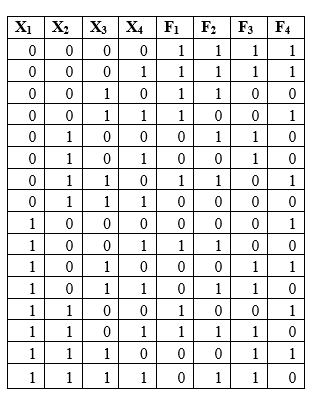

Тема: минимизация логической функции двумя способами и их сравнительный анализ
Дидактическая цель: закрепить теоретические знания по основам математической логики и выработать практические навыки по минимизации логической функции двумя способамиДидактическая цель: закрепить теоретические знания по основам математической логики и выработать практические навыки по минимизации логической функции двумя способами.
Литература:
- О.Е. Акимов. Дискретная математика. – М. Лаборатория Базовых Знаний. 2010. 1.2., 1.4..;
- Ф.А. Новиков. Дискретная математика. – С-Пб.: Питер. 2008. 3.4.;
- Еловенко Н.А. Дискретная математика. Учебное пособие. – Волгоград. ГОУ СПО ВЭТК. 2008. Главы 2, 3.;
Ход занятия:
- Проверка теоретической подготовки студентов (три булевы операции: обозначение в формуле и на схеме, таблицы истинности, три вида представления логической функции).
- Инструктаж преподавателя о ходе выполнения работы.
- Выполнение работы с использованием методических указаний по вариантам.
- Защита практической работы с ответами на контрольные вопросы (устно).
- Подведение итогов и оценка работы каждого студента.
Порядок выполнения работы:
- Ознакомиться с примером решения.
- Решить задания, соблюдая порядок оформления примера и оформить отчет (номер, тема и цель практической работы, решение задания по варианту, вывод).
- Подготовить ответы на контрольные вопросы (устно), сделать вывод и предъявить отчет преподавателю.
Пример решения: смотри примеры Практических работ № 5 и №7.
Задание:
Записать СДНФ по таблице истинности, минимизировать функцию двумя способами: используя законы и соотношения алгебры логики и диаграммы Карно-Вейча, сравнить результаты.
1 вариант 2 вариант F1, F2 F3, F4
Записать СДНФ по таблице истинности, минимизировать функцию двумя способами: используя законы и соотношения алгебры логики и диаграммы Карно-Вейча, сравнить результаты.
1 вариант 2 вариант F1, F2 F3, F4

Контрольные вопросы:
- Принципы группировки единиц в диаграмме Карно-Вейча;
- Принципы записи результирующей функции по диаграмме Карно-Вейча;
- Перечислить основные законы и формулы алгебры логики.